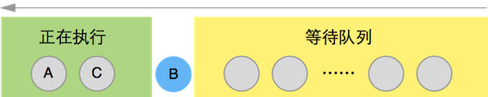

setTimeout, setImmediate, Process.nextTick 的区别
node 中的定时器
node中的定时器一个易混淆点在于，程序是在特定时间把某段代码插入到任务队列中去，而不是在某段时间后执行。比如 setTimeout(someFun,100)是在100毫秒之后把someFun插入到任务队列中。而由于JavaScript是单线程的，任务只能依次执行。如果这个时候没有任务正在执行，那么someFun就会立刻执行，但是如果有任务正在执行，就得等当前正在执行的任务执行完毕后才能执行。
Process.nextTick()
看代码：
process.nextTick(function(){
console.log("延迟执行B");
});
console.log("正常执行A");
console.log("正常执行C");
结果：
通过上面的代码可以看出Process.nextTick()是用来实现异步执行的。
setImmediate()
看代码：
setImmediate(function(){
console.log("延迟执行B");
});
console.log("正常执行A");
console.log("正常执行C");
结果：
通过上面的代码可以看出setImmediate也是用来实现异步执行的。那么它和Process.nextTick()有什么区别呢？
setImmediate() 和 Process.nextTick()的区别
把他们写在一个文件中跑跑看：
setImmediate(function(){
console.log("setImmediate延迟A");
});
process.nextTick(function(){
console.log("nextTick延迟");
});
setImmediate(function(){
console.log("setImmediate延迟B");
});
console.log("正常执行A");
console.log("正常执行B");
结果：

从运行结果来看，Process.nextTick()的回调函数执行的优先级要高于setImmediate()。可以形象地用下面两个图来描述这种差异。
Process.nextTick():
process.nextTick()方法可以在当前"执行栈"的尾部-->下一次Event Loop（主线程读取"任务队列"）之前-->触发process指定的回调函数。也就是说，它指定的任务总是发生在所有异步任务之前，当前主线程的末尾。（nextTick虽然也会异步执行，但是不会给其他io事件执行的任何机会）,属于idle观察者。
setImmediate():

setImmediate()是将事件插入到事件队列尾部，主线程和事件队列的函数执行完成之后立即执行setImmediate指定的回调函数，属于check观察者。
setTimeout()
setTimeout()只是将事件插入了"任务队列"，必须等到当前代码（执行栈）执行完，主线程才会去执行它指定的回调函数,采用的是类似I/O观察者。
总结对比
process.nextTick()属于idle观察者,setImmediate()属于check观察者。在每一轮循环检查中,idle观察者先于I/O观察者,I/O观察者先于check观察者。可以认为：Process.nextTick()优先级高于setTimeout()优先级高于setImmediate()。写个代码验证一下：
setTimeout(function(){
console.log("setTimeout 延迟执行A");
},100);
setImmediate(function(){
console.log("setImmediate 延迟A");
process.nextTick(function(){
console.log("process.nextTick 强势插入");
});
});
process.nextTick(function(){
console.log("process.nextTick 延迟");
});
setImmediate(function(){
console.log("setImmediate 延迟B");
});
setTimeout(function(){
console.log("setTimeout 延迟执行B");
},100);
console.log("正常执行A");
console.log("正常执行B");
运行结果:
Bingo!